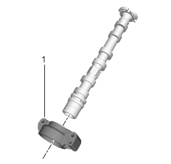
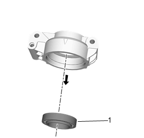
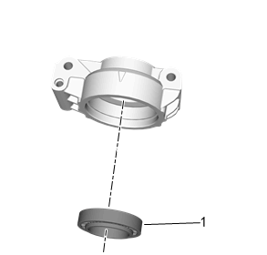

凸轮轴轴承的更换
专用工具
EN-52109凸轮轴前轴承拆卸/安装工具
拆卸程序
- 1.拆下需要维修轴承侧的凸轮轴。进气凸轮轴的更换、排气凸轮轴的更换。
-

2.使用EN-52109凸轮轴前轴承拆卸/安装工具在压机上将凸轮轴前盖（1）从凸轮轴上压下。
-

3.使用EN-52109凸轮轴前轴承拆卸/安装工具在压机将凸轮轴前轴承（1）从凸轮轴前盖上压下。
安装程序
-

1.使用EN-52109凸轮轴前轴承拆卸/安装工具在压机上将凸轮轴前轴承（1）压靠到轴承座止推面。
-
2.使用EN-52109凸轮轴前轴承拆卸/安装工具在压机上将凸轮轴前盖（1）压靠到凸轮轴止推面。
- 3.安装进气或排气凸轮轴。进气凸轮轴的更换、排气凸轮轴的更换